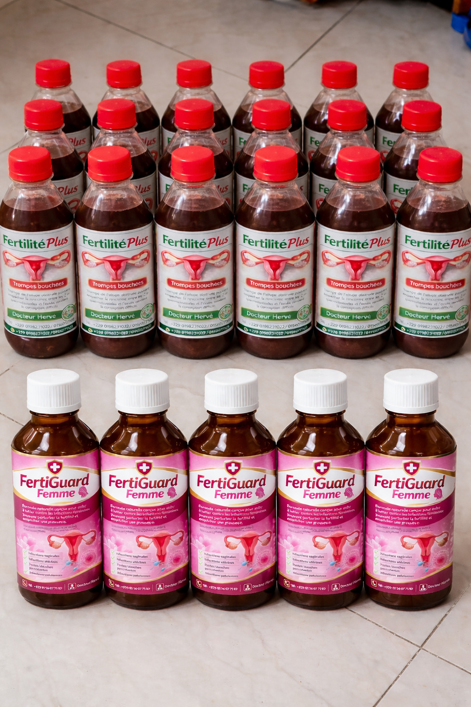
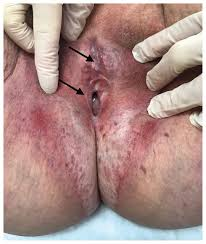

Bienvenue sur VitaPlante - Des solutions naturelles pour tomber enceinte


VitaPlante – La fertilité au naturel
Retrouvez l’espoir d’avoir un enfant grâce à des solutions naturelles conçues pour les femmes et les couples confrontés aux fibromes, kystes, trompes bouchées, SOPK, infections ou faible fertilité.
Pourquoi de nombreuses femmes choisissent VitaPlante ?
Nos produits naturels accompagnent les femmes qui souffrent de fibromes, myomes, kystes, trompes bouchées, règles absentes, infections, ovulation faible ou mauvaise qualité des spermatozoïdes.
Grâce à une approche naturelle et personnalisée, plusieurs couples ont déjà retrouvé l’espoir et réalisé leur rêve de devenir parents.
Fibromes & Myomes
Des solutions naturelles pour aider à réduire les fibromes, calmer les douleurs et améliorer les chances de grossesse.
Kystes & SOPK
Retrouvez un meilleur équilibre hormonal et améliorez votre ovulation naturellement.
Trompes bouchées
Découvrez des solutions naturelles pour aider à déboucher les trompes et favoriser la fertilité.
Faible fertilité masculine
Des produits pour améliorer la qualité, la mobilité et la quantité des spermatozoïdes.
3000+
Femmes et couples accompagnés
92%
Résultats positifs observés
100%
Produits naturels
Et si votre miracle commençait aujourd’hui ?
Vous avez l'impression d'avoir tout essayé sans succès ? Ne perdez pas espoir.
Le parcours vers la parentalité est parfois long et semé d'obstacles. Chez VitaPlante, nous savons que ce n'est pas seulement une question de chance, mais une question d'équilibre.
La nature possède des clés puissantes pour revitaliser votre fertilité :
Nutrition ciblée : Apport en zinc, fer et oméga-3 pour booster la vitalité.
Soutien hormonal : Des actifs naturels qui travaillent en harmonie avec votre corps.
Sérénité retrouvée : Réduire le stress, c'est libérer votre corps pour mieux concevoir.
Ne laissez plus le doute prendre le dessus. Découvrez comment nos produits naturels peuvent harmoniser votre santé globale.
À propos de VitaPlante
VitaPlante est née d'une conviction simple : la nature regorge de ressources précieuses pour accompagner la fertilité et le bien-être.
Face à l'épuisement de nombreuses femmes et couples après des années d’attente, VitaPlante vous propose une approche douce, naturelle et humaine.
Notre programme repose sur des plantes médicinales sélectionnées avec soin, un accompagnement personnalisé, et une écoute attentive de chaque histoire.
Plus qu’un simple traitement, VitaPlante est un parcours de reconnexion à soi, à son corps, et à son rêve de devenir parent.
Nous croyons qu’il n’y a pas d’âge pour espérer, et pas de honte à demander de l’aide. Chaque témoignage de réussite nous pousse à continuer,
et chaque nouvelle personne que nous accompagnons est une priorité.
Nous mettons à votre disposition des remèdes naturels très puissant qui neutralisent tous vos problèmes d'infertilité féminine et masculine peut importe le problème que vous avez
« VitaPlante, quand la nature soutient la vie »
Nos valeurs : Écoute – Bienveillance – Authenticité – Respect
Détails des maladies liées à la fertilité
Cliquez sur une maladie pour découvrir les explications complètes,
les causes possibles et les solutions adaptées.
🌸 Fibromes ou Myomes
🩺 Kystes
🔬 Trompes bouchées
💢 Endométriose
🦠 Infections
⚠️ Lichen sclérovulvaire
Fibromes utérins
Qu'est-ce qu'un fibrome utérin ?
Le fibrome utérin est une masse non cancéreuse qui se développe dans ou autour de l’utérus.
Beaucoup de femmes vivent avec des fibromes sans le savoir, mais dans certains cas, ils peuvent empêcher une grossesse ou provoquer des douleurs importantes.
❓ Est-ce que les fibromes empêchent de tomber enceinte ?
Oui, dans certains cas, les fibromes peuvent empêcher la grossesse en déformant l’utérus, en bloquant l’implantation de l’embryon ou en perturbant l’ovulation.
❓ Quels sont les signes qui peuvent montrer que j'ai des fibromes ?
Règles abondantes ou prolongées
Douleurs pelviennes
Ballonnement du ventre
Difficulté à tomber enceinte
Fausses couches répétées
❓ Est-ce que je peux être gueri completement des fibromes ?
Les fibromes peuvent se disparaitre ou se dissous completement selon les traitements, l’alimentation et l’équilibre hormonal.
C'est là qui rentre en jeu les produits de Dr Hervé et un échographie est toujours recommandé avant et après les traitements .
Pourquoi les fibromes apparaissent-ils ?
Les fibromes apparaissent souvent à cause :
Déséquilibre hormonal
Stress chronique
Inflammation interne
Facteurs héréditaires
Alimentation déséquilibrée
Comment les solutions naturelles du Docteur Hervé peuvent aider ?
Les solutions naturelles proposées par le Docteur Hervé sont conçues pour soutenir l’organisme féminin en favorisant :
L’équilibre hormonal naturel
La réduction progressive des inflammations internes
L’amélioration de la circulation sanguine dans l’utérus
Le nettoyage naturel de l’organisme
Grâce à une utilisation régulière et accompagnée de conseils adaptés, ces solutions peuvent aider le corps à retrouver un meilleur équilibre et favoriser des conditions favorables à la fertilité.
Que dois-je faire si j'ai des fibromes ?
Faire une échographie pour connaître leur taille
Suivre les recommandations adaptées
Adopter une alimentation équilibrée
Utiliser des solutions naturelles adaptées à votre situation
Un kyste ovarien est une petite poche remplie de liquide qui se développe sur l’ovaire.
Certaines femmes peuvent avoir un seul kyste, tandis que d'autres peuvent en avoir plusieurs.
Lorsqu'il y a plusieurs petits kystes sur les ovaires, on parle souvent du SOPK (Syndrome des Ovaires Polykystiques).
❓ Est-ce que les kystes peuvent empêcher une grossesse ?
Oui, certains kystes peuvent perturber l'ovulation normale.
Sans ovulation régulière, la grossesse devient difficile ou prend beaucoup de temps.
❓ Quels sont les signes qui montrent que j'ai des kystes ?
Règles irrégulières
Absence de règles pendant plusieurs mois
Douleurs dans le bas-ventre
Prise de poids inexpliquée
Acné persistante
Difficulté à tomber enceinte
❓ Est-ce que les kystes peuvent disparaître ?
Certains petits kystes peuvent disparaître naturellement.
Mais dans certains cas, ils persistent et nécessitent un accompagnement adapté pour favoriser leur réduction et améliorer le fonctionnement hormonal.
Pourquoi les kystes apparaissent-ils ?
Les kystes ovariens apparaissent souvent à cause :
Déséquilibre hormonal
Ovulation irrégulière
Stress prolongé
Mauvaise alimentation
Excès d’hormones masculines
Quel est le lien entre SOPK et infertilité ?
Le SOPK est l'une des causes les plus fréquentes d'infertilité chez la femme.
Il empêche souvent la libération régulière des ovules, ce qui réduit les chances de conception.
Cependant, avec une prise en charge adaptée, beaucoup de femmes réussissent à retrouver un cycle régulier.
Comment les solutions naturelles du Docteur Hervé peuvent aider ?
Les solutions naturelles proposées visent à soutenir l'organisme féminin en favorisant :
L’équilibre hormonal naturel
L’amélioration de l’ovulation
La réduction progressive des déséquilibres internes
Le soutien du fonctionnement des ovaires
Avec une utilisation régulière accompagnée de conseils adaptés, ces solutions peuvent aider à améliorer les conditions naturelles nécessaires à la fertilité.
Le SOPK (Syndrome des Ovaires Polykystiques) est une condition dans laquelle les ovaires contiennent plusieurs petits kystes.
Cela perturbe souvent l’ovulation et rend la grossesse difficile.
Beaucoup de femmes vivent avec le SOPK sans le savoir pendant des années.
❓ Pourquoi mes règles sont irrégulières ?
Dans le SOPK, les hormones sont déséquilibrées.
Cela empêche les ovaires de libérer un ovule régulièrement, ce qui provoque des retards ou une absence de règles.
❓ Est-ce que je peux tomber enceinte avec le SOPK ?
Oui, certaines femmes atteintes du SOPK peuvent tomber enceinte, mais cela peut prendre plus de temps.
Avec un accompagnement adapté, il est possible d’améliorer les chances d’ovulation.
❓ Pourquoi je prends du poids facilement ?
Le SOPK peut perturber le métabolisme du sucre et provoquer une prise de poids, surtout au niveau du ventre.
❓ Pourquoi j'ai de l’acné ou des poils inhabituels ?
Le SOPK peut provoquer un excès d’hormones masculines.
Cela peut entraîner :
Acné persistante
Poils sur le visage ou le corps
Chute de cheveux
⚠️ Signes possibles du SOPK
Règles irrégulières
Absence d’ovulation
Prise de poids rapide
Fatigue persistante
Infertilité prolongée
Acné fréquente
Poils excessifs
Pourquoi le SOPK apparaît-il ?
Déséquilibre hormonal
Résistance à l’insuline
Facteurs héréditaires
Stress prolongé
Mauvaise alimentation
🌿 Comment les solutions naturelles du Docteur Hervé peuvent m'aider ?
Les solutions naturelles proposées visent à soutenir l'organisme en favorisant :
L’équilibre hormonal naturel
L'amélioration de l’ovulation
La réduction des déséquilibres internes
L'amélioration du fonctionnement des ovaires
Avec une utilisation régulière accompagnée de conseils adaptés, ces solutions peuvent contribuer à améliorer les conditions naturelles nécessaires à une conception.
Les trompes de Fallope sont deux petits tubes qui relient les ovaires à l’utérus.
C’est dans les trompes que se fait normalement la rencontre entre l’ovule et le spermatozoïde.
Lorsque les trompes sont bouchées, l’ovule ne peut plus rencontrer le spermatozoïde, ce qui empêche la grossesse naturelle.
❓ Est-ce que je peux tomber enceinte avec des trompes bouchées ?
Lorsque les deux trompes sont totalement bouchées, la grossesse naturelle devient très difficile.
Mais lorsque le problème est identifié tôt et accompagné correctement, certaines femmes retrouvent des conditions favorables à la conception.
❓ Comment savoir si mes trompes sont bouchées ?
Le seul moyen sûr est de faire un examen appelé :
Hystérosalpingographie (HSG)
Échographie spécialisée
Scanner des trompes
Beaucoup de femmes ne ressentent aucun symptôme visible, ce qui rend le diagnostic difficile sans examen médical.
❓ Quels sont les signes possibles ?
Difficulté à tomber enceinte pendant longtemps
Douleurs pelviennes fréquentes
Infections répétées
Antécédents d'infection génitale
Fausses couches répétées
🧠 Toutes les manières possibles qu'une trompe peut être bouchée
Il existe plusieurs types de trompes bouchées.
1️⃣ Trompes totalement bouchées
Dans ce cas, le passage est complètement fermé.
L’ovule et les spermatozoïdes ne peuvent pas circuler.
Causes possibles :
Infections anciennes
Inflammation chronique
Adhérences internes
2️⃣ Trompes partiellement bouchées
La trompe n’est pas complètement fermée, mais le passage est difficile.
Cela peut empêcher une grossesse ou provoquer une grossesse extra-utérine.
3️⃣ Trompes collées
Les trompes peuvent se coller aux tissus voisins à cause d'infections ou d'inflammations.
Cela empêche leur bon fonctionnement.
4️⃣ Trompes remplies de liquide (Hydrosalpinx)
Dans ce cas, la trompe contient un liquide inflammatoire.
Ce liquide peut empêcher la fécondation et perturber l’implantation de l’embryon.
5️⃣ Trompes endommagées après infection
Certaines infections peuvent abîmer la structure interne des trompes.
Même si elles ne sont pas complètement bouchées, leur fonctionnement devient difficile.
6️⃣ Trompes bouchées après avortement ou infection mal traitée
Les infections mal soignées peuvent provoquer des cicatrices internes qui bloquent les trompes.
⚠️ Pourquoi les trompes se bouchent-elles ?
Les causes les plus fréquentes sont :
Infections génitales mal traitées
Maladies sexuellement transmissibles
Inflammations répétées
Endométriose
Interventions chirurgicales anciennes
Avortements compliqués
🌿 Comment les solutions naturelles du Docteur Hervé peuvent m'aider ?
Les solutions proposées par le Docteur Hervé visent à soutenir l’organisme en favorisant :
La réduction progressive des inflammations internes
L'amélioration de la circulation dans les organes reproducteurs
Le soutien des mécanismes naturels de réparation du corps
L'amélioration de l'environnement interne favorable à la fertilité
Avec un accompagnement adapté et une utilisation régulière, ces solutions peuvent contribuer à améliorer les conditions naturelles nécessaires à une conception.
# 📌 Que dois-je faire si j'ai des trompes bouchées ?
L’endométriose est une maladie dans laquelle des tissus semblables à ceux de l’utérus se développent en dehors de l’utérus.
Ces tissus peuvent se retrouver sur les ovaires, les trompes ou d'autres organes internes.
Cela peut provoquer des douleurs intenses et rendre difficile la grossesse.
---
❓ Si j'avais l’endométriose, quelles questions je me poserais ?
❓ Est-ce que l’endométriose empêche de tomber enceinte ?
Oui, l’endométriose peut réduire les chances de grossesse en provoquant des inflammations, des adhérences ou en perturbant le fonctionnement des ovaires et des trompes.
Cependant, avec un bon accompagnement et une prise en charge adaptée, certaines femmes arrivent à améliorer leur fertilité.
❓ Quels sont les signes qui peuvent montrer que j'ai l’endométriose ?
Douleurs très fortes pendant les règles
Douleurs dans le bas-ventre
Douleurs pendant les rapports sexuels
Fatigue chronique
Difficulté à tomber enceinte
Douleurs pelviennes fréquentes
❓ Est-ce que l’endométriose peut provoquer des fausses couches ?
Oui, dans certains cas, l’endométriose peut perturber l’environnement interne nécessaire à une grossesse stable.
Cela peut rendre la grossesse difficile à maintenir.
---
Pourquoi l’endométriose apparaît-elle ?
Les causes exactes ne sont pas toujours connues, mais plusieurs facteurs peuvent favoriser son apparition :
Déséquilibre hormonal
Inflammation chronique
Facteurs héréditaires
Reflux menstruel
Système immunitaire affaibli
---
Quels sont les effets de l’endométriose sur la fertilité ?
Blocage des trompes
Formation d’adhérences internes
Diminution de la qualité des ovules
Inflammation des organes reproducteurs
Perturbation de l’implantation de l’embryon
---
🌿 Comment les solutions naturelles du Docteur Hervé peuvent aider ?
Les solutions naturelles proposées par le Docteur Hervé sont conçues pour soutenir l’organisme en favorisant :
La réduction progressive des inflammations internes
L'amélioration de l’équilibre hormonal
Le soutien du fonctionnement naturel des organes reproducteurs
L'amélioration de l’environnement interne favorable à la fertilité
Avec une utilisation régulière accompagnée de conseils adaptés, ces solutions peuvent aider à améliorer les conditions naturelles nécessaires à une conception.
---
📌 Que dois-je faire si je soupçonne une endométriose ?
Consulter un professionnel de santé
Faire une échographie ou une IRM
Identifier le niveau de la maladie
Suivre les recommandations adaptées
Maintenir une bonne hygiène de vie
---
📞 Que faire maintenant ?
Si vous souffrez de douleurs inexpliquées ou de difficultés à concevoir, il est important de rechercher la cause réelle du problème.
Un accompagnement adapté peut faire une grande différence dans votre parcours vers la maternité.
Détails complets sur les Infections qui empêchent une grossesse
Qu'est-ce qu'une infection génitale ?
Une infection génitale est la présence de microbes, bactéries ou virus dans les organes reproducteurs.
Certaines infections peuvent être silencieuses pendant longtemps, sans symptômes visibles, mais elles peuvent provoquer des complications graves comme l'infertilité ou des fausses couches.
---
❓ Si j'avais une infection, quelles questions je me poserais ?
❓ Est-ce qu'une infection peut empêcher une femme de tomber enceinte ?
Oui, certaines infections peuvent provoquer une inflammation des organes reproducteurs, endommager les trompes ou perturber l’utérus, rendant la grossesse difficile.
❓ Est-ce qu'une infection peut provoquer des fausses couches ?
Oui, certaines infections peuvent affaiblir l'environnement interne nécessaire pour maintenir une grossesse, ce qui peut provoquer des fausses couches répétées.
❓ Est-ce qu'un homme peut être infecté sans le savoir ?
Oui, beaucoup d'hommes peuvent avoir une infection sans symptômes visibles.
Cela peut réduire la qualité des spermatozoïdes et empêcher une grossesse.
---
# 🦠 Types d'infections qui peuvent empêcher une grossesse
1️⃣ Infections bactériennes
Infections vaginales répétées
Infections de l’utérus
Infections des trompes
Infections urinaires fréquentes
Ces infections peuvent provoquer :
Inflammations internes
Formation d’adhérences
Blocage des trompes
---
2️⃣ Maladies sexuellement transmissibles (MST)
Certaines infections transmises lors des rapports sexuels peuvent provoquer des complications graves.
Infections pouvant provoquer des douleurs pelviennes
Infections pouvant abîmer les trompes
Infections pouvant réduire la fertilité
---
3️⃣ Infections chez l’homme
Les infections peuvent également affecter les organes reproducteurs masculins.
Diminution du nombre de spermatozoïdes
Diminution de leur mobilité
Altération de leur qualité
Difficulté à féconder l’ovule
---
4️⃣ Infections chroniques mal traitées
Certaines infections persistent pendant longtemps si elles ne sont pas correctement traitées.
Elles peuvent provoquer des complications progressives dans les organes reproducteurs.
---
# ⚠️ Signes possibles d'infection
Pertes vaginales inhabituelles
Mauvaises odeurs persistantes
Douleurs pelviennes
Brûlures urinaires
Démangeaisons fréquentes
Douleurs pendant les rapports sexuels
Douleurs testiculaires chez l’homme
---
# 🌿 Comment les solutions naturelles du Docteur Hervé peuvent aider ?
Les solutions naturelles proposées par le Docteur Hervé visent à soutenir l'organisme en favorisant :
Le nettoyage naturel de l’organisme
La réduction des inflammations internes
Le soutien du système immunitaire
L'amélioration de l’environnement interne favorable à la fertilité
Avec un accompagnement adapté et une utilisation régulière, ces solutions peuvent contribuer à améliorer les conditions naturelles nécessaires à une conception.
---
# 📌 Que dois-je faire si je pense avoir une infection ?
Faire un test médical approprié
Identifier le type d'infection
Suivre les recommandations adaptées
Maintenir une bonne hygiène intime
Éviter l’automédication sans diagnostic
---
📞 Que faire maintenant ?
Si vous soupçonnez une infection ou si vous avez des difficultés à concevoir, il est important d’identifier la cause réelle du problème.
Un accompagnement adapté peut faire une grande différence dans votre parcours vers la maternité.
Le lichen scléreux est un trouble qui provoque des démangeaisons et une cicatrisation de la région entourant l’anus et l’appareil génital.
L’étiologie du lichen scléreux est inconnue, mais elle peut impliquer une attaque du système immunitaire contre les tissus (pathologie auto-immune).
Le lichen scléreux touche la région entourant l’anus et l’appareil génital, mais peut, dans de rares cas, apparaître dans d’autres régions du corps.
Quels sont les symptômes possibles ?
Dans les premiers stades, la peau entourant l’anus et l’appareil génital présente des contusions et parfois des cloques.
Les démangeaisons, parfois graves, sont un signe typique. Après un certain temps, la peau devient plus mince, perd sa couleur normale, et présente des fissures et des squames.
Chez certains, le trouble évolue différemment, provoquant un épaississement de la peau.
Les cas sévères et de longue durée de lichen scléreux provoquent une cicatrisation qui déforme les structures normales de la région périanale et génitale.
Parfois, l’aspect du lichen scléreux chez les enfants peut ressembler aux conséquences d’abus sexuels.
Dans de rares cas, un carcinome épidermoïde (cancer de la peau) se développe dans des zones ayant été affectées par un lichen scléreux pendant longtemps.
En conclusion on peut citer :
Démangeaisons intenses
Brûlures
Douleurs pendant les rapports
Plaques blanches sur la peau
Irritations chroniques
Que faire ?
Faire une diète d'élimination
Couper le sucre
Rebâtir sa flore intestinale en collaboration avec un gynécologue et ou un spécialiste en gynécologie
Nos Traitements
Une prise en charge complète par un professionnel thérapeute pour un suivi régulier donne de la guérison en cas de lichen scléreux vulvaire non avancé en courte durée.
Pour un cas avancé, le traitement peut prendre un peu plus de temps avec beaucoup de contrôle jusqu'à la phase de la guérison . Un traitement par de plusieurs plantes associées à des compléments alimentaires sans additif chimique qui protège les tissus sains de la region vulve. Un système qui protège après la régénération des tissus attaqués , renforce le système immunitaire de la patiente du lichen scléreux vulvaire. Le critoris reprend sa forme ainsi que les lèvres.
La patiente reprend donc le plaisir sans doute ni de sensation de la douleur.
Témoignages de nos patients
Découvrez les témoignages vidéo de personnes ayant retrouvé la fertilité grâce aux solutions naturelles VitaPlante.
Marie – France Trompes bouchées depuis 5 ans
Sofia – Italie Fibrome traité naturellement
Amina – Maroc Grossesse obtenue après 3 ans
Astuces naturelles
Règles menstruelles douloureuses
Règles menstruelles irrégulières
Kystes
Fibromes
Pertes blanches
Faiblesse sexuelle
Accouchement
Chance de tomber enceinte avec gombo
Hémorroïdes
Diabète
Hoquet
Ulcère d'estomac
Règles menstruelles douloureuses
Boire une infusion chaude de gingembre ou de cannelle peut soulager la douleur. Évitez les aliments gras et misez sur les légumes verts.
Couper 4 morceaux de racine de papayer, laver et faire bouillir dans 3 litres de vin blanc ou d'eau. Boire
1 verre matin et soir
Tourner 1 cuillerée d'agile dans un verre d'eau + 1 citron + un peu de sel et boire pendant les règles
Faire bouillir une poignée de persil dans l'eau et boire
2 verres par jour
Règles menstruelles irrégulières
Consommer régulièrement des graines de fenugrec ou de persil peut aider à réguler le cycle.
Bouillir le foléré et le massep, se purger 2 fois par semaine pendant 1 mois
Bouillir une poignée de persil dans 2 litres d'eau, prendre un verre matin et soir Une infusion de feuilles de framboisiers et d'orties, macérées dans de l'eau bouillante, pendant 5 min. Filtrez et buvez l'infusion,
en ajoutant du miel au besoin. Cette infusion est un remède efficace pour revitaliser le tonus utérin en période post-partum, pour soigner les fibromes et pour soulager les douleurs associés aux règles.
L'infusion est aussi efficace pour soulager les troubles associés aux règles et pour augmenter la lactation des femmes allaitantes
Kystes
L’aloe vera combiné à du miel peut contribuer à réduire l’inflammation des kystes avec un usage régulier.
Fibromes
Une cure de tisane de feuilles de goyave ou de racine de manioc est souvent utilisée pour aider à réduire les fibromes.
Bouillir une poignée de persil dans 2 litres d'eau, prendre un verre matin et soir Une infusion de feuilles de framboisiers et d'orties, macérées dans de l'eau bouillante, pendant 5 min. Filtrez et buvez l'infusion,
en ajoutant du miel au besoin. Cette infusion est un remède efficace pour revitaliser le tonus utérin en période post-partum, pour soigner les fibromes et pour soulager les douleurs associés aux règles.
L'infusion est aussi efficace pour soulager les troubles associés aux règles et pour augmenter la lactation des femmes allaitantes
Pertes blanches
Le bain de siège au bicarbonate de soude ou au vinaigre de cidre peut aider à rétablir la flore vaginale.
Aloès Véra: écraser la feuille, faire ressortir le gel et utiliser comme lavement vaginal pendant la période
féconde
L'infusion de cannelle est efficace contre les pertes
blanches: infusez 10 à 15 g d'écorce de cannelle par litre d'eau, prenez 3 tasses par jour
Faites infuser dans 1 litre d'eau 1 bouquet de persil à feuilles. En boire une tasse avant chaque repas.
Avalez 1 gousse d'ail chaque matin après votre
petit-déjeuner
Faiblesse sexuelle
Le gingembre, le miel et le citron sont réputés pour améliorer la libido naturellement.
Melanger 2 cuillerées à soupe de jus de citron, 2 cuillerées à soupe de miel, une tasse d'eau chaude ou le café de votre choix. Boire habituellement le soir au coucher pendant 5 jours. Pour ne plus être réinfecté, la femme doit faire sa toilette intime avant les rapports avec son mari.
Prenez une bouteille, mélangez une poignée de clou de girofle, du gingembre et des oignons. Laissez macérer pendant 15 jours à l'abri de la lumière. Prenez un verre chaque matin et chaque soir et vous verrez la capacité
Prenez du jus de citron chaque matin dans de l'eau tiède et dite au revoir à l'éjaculation précoce. La préparation est très simple, pressez un demi citron dans un verre contenant de l'eau tiède, melangez bien et boire le tout. Répétez chaque matin Une heure avant les rapports sexuelles, prenez tout juste un petit cola encore appelé garcinia ou mbita cola+ un monodora myristica encore appelé pépé Mangez les deux et avalez. Svp, ne dépassez pas la dose donnée. Si vous voulez totalement guérir ces maux, suivez ce traitement pendant 4 semaines et dites adieu aux faiblesses sexuelles et éjaculation précoce
Il faut chercher comme ingrédients:
-25g de gingembre écrasé frais, 25g de ginseng moulu, 15g de clou de girofle moulu 03 litre d'eau jus de 03 citrons murs, 1/2 litre de miel pur.
Préparation et mode d'emploi:
Melanger tous ces ingrédients et laisser fermenter 3jours. Boire 1 verre moyen tous les soirs avant d'aller au lit. Cette potion est aussi importante pour ceux qui veulent augmenter la quantité du sperme.
Le gingembre possède des vertus vasodilatatrices facilitant l'afflux de sang. C'est un aliment aphrodisiaque par excellence, nos grands-mères le savaient déjà et mettent à notre disposition des recettes contre les troubles de l'érection. Voici un exemple d'infusion: râper 50 g de gingembre frais et laisser reposer pendant au moins 4 heures dans un litre d'eau au réfrigérateur. Il faut consommer deux verres par jour et attendre 15 jours pour voir les premiers résultats et améliorer la libido
Ingrédients
1/4 de pastèque
- 1 citron
Préparation:
Mettez tous les ingrédients dans un blender ou mixeur et mixez-les bien. Versez le melange dans une bouteille et conservez-la au réfrigérateur.
Mode d'emploi:
Buvez un petit verre de jus le matin à jeun et faites la même chose avant le dîner. Ce melange est riche
Accouchement
Boire des tisanes de feuilles de framboisier en fin de grossesse peut aider à faciliter l’accouchement.
Pour accoucher facilement, faire macérer deux écorces fraîches de kolatier dans trois quarts de litre d'eau pendant 3 heures. Boire 1 verre en salle d'accouchement.
Votre femme est à terme je dis bien à terme dans son neuvième mois de grossesse, prend cette plante dont le nom scientifique est commelina diffusa, puis écrase cette plante et qu'elle se purge avec l'eau tiède. Ceci ouvre le col utérus et facilite l'accouchement.
Pour faciliter l'accouchement, il faut mâcher quelques feuilles de la plante Alchornea cordifolia aux heures ou jours de votre accouchement.
Chance de tomber enceinte avec gombo
Il existe différentes manières d'utiliser le gombo pour stimuler l'ovulation, l'une consiste à en faire une soupe en utilisant le gombo et les feuilles. Le meilleur moyen est de couper environ 5 morceaux de gombo dans de l'eau, de les faire tremper pendant la nuit et de les boire le matin.
Faites-le après vos règles et répétez pendant 2 à 3 nuits Aucun mal à essayer car les feuilles et les fruits du gombo ont tellement d'avantages pour la santé.
1. Si vous prévoyez de tomber enceinte bientôt, vous pouvez inclure des feuilles de gombo et des fruits dans vos repas quotidiens, aussi longtemps que vous le pouvez..
2. À l'approche de votre fenêtre fertile, coupez et faites tremper les fruits du gombo pendant la nuit. Buvez le jus le matin à jeun.
Faites cela pendant 3 jours. L'eau du gombo augmente les chances de concevoir des jumeaux et des multiples.
Hémorroïdes
Bouillir des feuilles de citronnelle dans 5 litres d'eau, puis faire un bain de siège pendant 20 minutes.
Faire de simple lavement avec l'huile d'olive.
Prendre oignon cru ou cuit, un peu de pomme de terre râpées, écraser l'oignon melanger à un peu de beurre ou de la pomme râpé, appliquer la pâte à l'anus au coucher le soir, maintenir par pansement pour enlever le matin pendant 7 nuits.
Prendre 2 kilo d'écorce de manguier et 2 litres d'eau; faire bouillir le melange, le laisser reposer pendant 2 heures. Filtrer, le laisser refroidir, faire un bain de siège avec cette eau, boire également 1 à 2 verre(s) par jour.
En cas de crise, racler l'intérieur de la feuille d'Aloé Véra, faire congeler en petit sous forme de suppositoire, enfoncer dans l'anus.
Diabète
Le jus de feuilles de patate douce ou le thé de feuilles de manguier sont souvent utilisés pour aider à contrôler la glycémie.
Hoquet
Tremper un morceau de sucre dans un jus de citron puis consommer le sucre et après consommer 2 cuillérées à soupe de citron.
Allongez-vous, coincez vos pieds sous un meuble et demandez à quelqu'un de tirer sur vos bras, ou suspendez-vous à bout de bras à une barre. Ces etirements vont remettre votre axe vertébral en place et décoincer la racine nerveuse qui souffre
Avaler une cuillère de miel: Une bonne cuillère à café de miel devrait aider à faire cesser votre crise de hoquet. Cet aliment est en effet réputé pour calmer ces sursauts grâce à son effet collant
Ulcère d'estomac
Le jus de chou cru est un remède naturel efficace contre l’ulcère, pris avant les repas.
En crise, boire du lait peack.
Manger de l'argile blanche ou de l'argile verte bien
tendre ( kalaba ou kaolin) les matins à jeun.
Obtenez une papaye non mûre et la laver. Ne pas peler et ne pas enlever les graines. Après avoir soigneusement nettoyé l'extérieur, coupez-le en tranches sans le peler. La coupe devrait être petite comme des morceaux de sucre. Mettez tous les petits morceaux de la papaye dans un récipient propre.
Remplissez le récipient avec de l'eau pour arrêter au même point que la papaye en tranche s'est arrêtée.
Laissez la papaye dans l'eau pendant quatre jours. Par exemple, si vous le faites tremper un lundi, compter mardi, mercredi, jeudi et vendredi sera le quatrième jour. Le quatrième jour, l'eau sera blanche filtrez l'eau jetez la papaye et l'eau devient votre remède contre l'ulcère.
POSOLOGIE: boire un demi-verre de l'eau de la papaye tous les matins, après-midi et soir. Vous ne sentirez plus ces douleurs ulcéreuses, car elles soigneront les plaies internes qui sont à l'origine de la douleur. le matin, l'après-midi et le soir, la consommation d'eau de papaye peut continuer pendant des semaines et des mois, en fonction de la gravité de l'ulcère. Ce n'est pas un soulagement. C'est un remède.
Pour des conseils personnalisés, n'hésitez pas à
nous contacter.